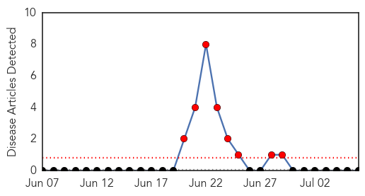
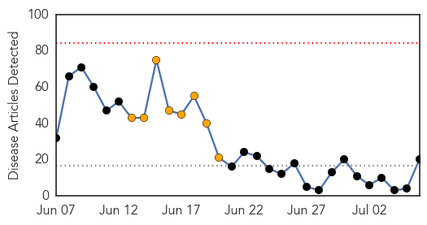
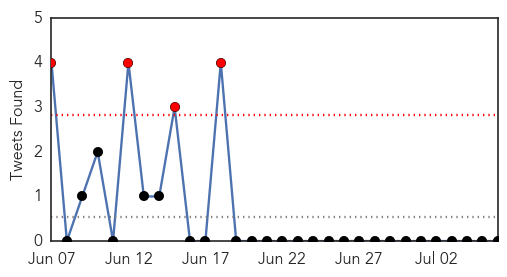
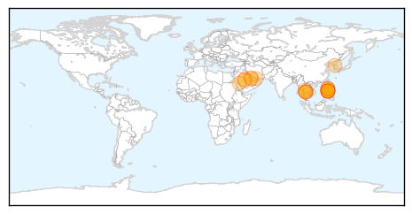
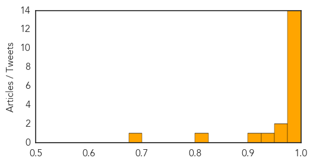

Bubonic Plague
30-Day Web Trend
8 alerts, 0 warnings

30-Day Twitter Trend
0 alerts, 0 warnings

Article Locations

Article Confidences

Top Articles:
-
No articles found for Jul 06, 2015
Top Tweets:
-
No tweets found for Jul 06, 2015
MERS
30-Day Web Trend
0 alerts, 8 warnings

30-Day Twitter Trend
2 alerts, 14 warnings

Article Locations
Article Confidences
Top Articles:
- 1.000
- Surveillance for MERS to continue
- 1.000
- Philippines confirms second MERS case in man who travelled from Dubai
- 0.999
- Philippines confirms second Mers case
- 0.999
- DOH: Foreigner in PH tests positive for MERS-CoV
- 0.999
- Second Case of Mers Alerts Authorities
- 0.999
- Palace says DOH on top of MERS-CoV situation
- 0.998
- Second case of MERS-COV in the Philippines confirmed, 7 came in close contact with the victim
- 0.998
- Foreigner in Philippines Tests Positive for MERS Virus
- 0.997
- Philippines Confirms Second MERS Case
- 0.993
- Philippines steps up Mers watch after new case
- 0.992
- Ministry announces six MERS infections
- 0.991
- DOH: Foreigner tests positive for MERS
- 0.987
- POLO offices on alert for MERS-CoV
- 0.977
- Palace: Philippines ready for MERS
- 0.973
- Aquino orders intensified surveillance in ports of entry vs MERS-CoV
- 0.968
- PNoy orders tighter MERS-CoV surveillance, quarantine
- 0.939
- Qatar- HMC gives health and travel advice for Umrah pilgrims
- 0.905
- Philippines confirms second MERS case
- 0.802
- Safety precautions by HMC for Umrah pilgrims
- 0.682
- Philippines confirms second case of MERS
Top Tweets:
-
No tweets found for Jul 06, 2015